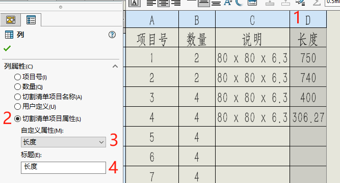

焊件材料明细表
焊件作为一种多实体零件文件，由多个焊件实体和机加工实体组成。因此单个焊件零件里会有多个零件清单，那么我们可以通过【材料明细表-详细切割清单】来列举切割清单里的明细（如下图）
使用
工程图表格类型：在工程图【注解-表格】内，可以选择两种明细表【.sldbombt】和【.sldwldbt】格式。类型不同但是表现的内容可以相同，这里暂时未发现有啥差异，可以自行选择使用
自定义
焊件切割清单表格的自定义需要使用到“切割清单属性”，一般操作是增加列并设置【列属性-切割清单属性-选择属性】，如图：（材料明细表的自定义可以参考以往视频文章，或者站内搜索获取。操作其实类似的）
完成表格模板设置后，选中表格，右键坐上角进行【另存为】操作。
在另存为的窗口里，输入“模板名称”和“模板格式.sldwldbt”保存即可。
补充一点：正常使用焊件切割清单时，软件会优先选中设置路径下的文件。即我们的模板文件一般放在【系统选项-文件位置-焊件切割清单模板】设置的路径下，这将方便于使用。
Q&A
Q但是我又有个疑问：在装配体里焊件零件是如何处理其中焊件清单的呢？（理应是被处理成单个零件文件，也就是一行明细而已。这就需要二级的焊件材料明细表？）
A如果是装配体工程图，是不能使用【注解-表格-焊件切割清单】的，可以使用【材料明细表】显示“详细切割清单”的焊件明细。
纤细切割清单的属性是来自于焊件“切割清单属性”的，也就是